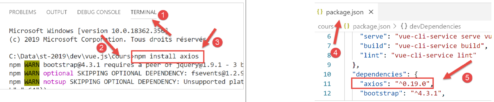
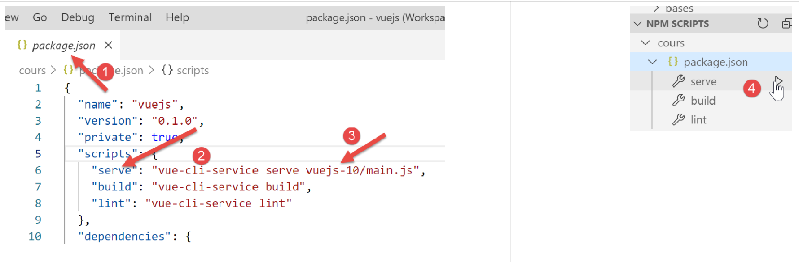
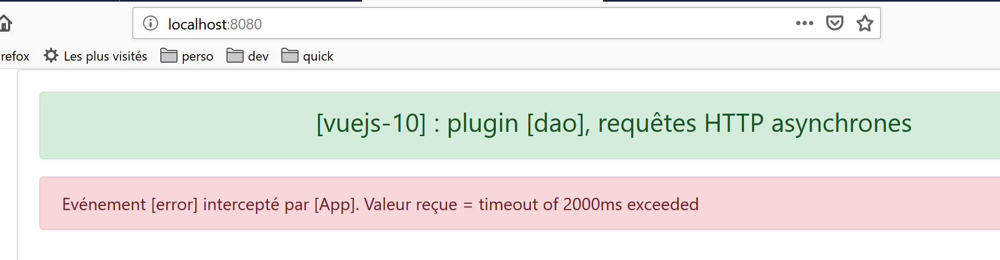

12. projet [vuejs-10] : plugin [dao], requêtes HTTP asynchrones
L’arborescence du projet [vuejs-10] est la suivante :

Le projet [vuejs-10] montre un composant faisant une requête HTTP à un serveur distant. L’architecture utilisée est la suivante :

Un composant [Vue.js] utilise la couche [dao] pour dialoguer avec le serveur de calcul de l’impôt.
12.1. Installation des dépendances
L’application [vuejs-10] utilise la bibliothèque [axios] pour faire les requêtes asynchrones vers le serveur de calcul d’impôt. Il nous faut installer cette dépendance :

- en [4-5], la ligne ajoutée au fichier [package.json] après l’installation de la bibliothèque [axios] [1-3] ;
12.2. La classe [Dao]
La classe [Dao] est celle qui a été développée au paragraphe [La classe Dao]. Nous la redonnons ici pour mémoire :
'use strict';
// imports
import qs from 'qs'
// classe [Dao]
class Dao {
// constructeur
constructor(axios) {
this.axios = axios;
// cookie de session
this.sessionCookieName = "PHPSESSID";
this.sessionCookie = '';
}
// init session
async initSession() {
// options de la requête HHTP [get /main.php?action=init-session&type=json]
const options = {
method: "GET",
// paramètres de l'URL
params: {
action: 'init-session',
type: 'json'
}
};
// exécution de la requête HTTP
return await this.getRemoteData(options);
}
async authentifierUtilisateur(user, password) {
// options de la requête HHTP [post /main.php?action=authentifier-utilisateur]
const options = {
method: "POST",
headers: {
'Content-type': 'application/x-www-form-urlencoded',
},
// corps du POST
data: qs.stringify({
user: user,
password: password
}),
// paramètres de l'URL
params: {
action: 'authentifier-utilisateur'
}
};
// exécution de la requête HTTP
return await this.getRemoteData(options);
}
async getAdminData() {
// options de la requête HHTP [get /main.php?action=get-admindata]
const options = {
method: "GET",
// paramètres de l'URL
params: {
action: 'get-admindata'
}
};
// exécution de la requête HTTP
const data = await this.getRemoteData(options);
// résultat
return data;
}
async getRemoteData(options) {
// pour le cookie de session
if (!options.headers) {
options.headers = {};
}
options.headers.Cookie = this.sessionCookie;
// exécution de la requête HTTP
let response;
try {
// requête asynchrone
response = await this.axios.request('main.php', options);
} catch (error) {
// le paramètre [error] est une instance d'exception - elle peut avoir diverses formes
if (error.response) {
// la réponse du serveur est dans [error.response]
response = error.response;
} else {
// on relance l'erreur
throw error;
}
}
// response est l'ensemble de la réponse HTTP du serveur (entêtes HTTP + réponse elle-même)
// on récupère le cookie de session s'il existe
const setCookie = response.headers['set-cookie'];
if (setCookie) {
// setCookie est un tableau
// on cherche le cookie de session dans ce tableau
let trouvé = false;
let i = 0;
while (!trouvé && i < setCookie.length) {
// on cherche le cookie de session
const results = RegExp('^(' + this.sessionCookieName + '.+?);').exec(setCookie[i]);
if (results) {
// on mémorise le cookie de session
// eslint-disable-next-line require-atomic-updates
this.sessionCookie = results[1];
// on a trouvé
trouvé = true;
} else {
// élément suivant
i++;
}
}
}
// la réponse du serveur est dans [response.data]
return response.data;
}
}
// export de la classe
export default Dao;
Le projet [vuejs-10] n’utilise que la méthode asynchrone [initSession] des lignes 18-30. On rappelle que la classe [Dao] est instanciée avec un paramètre [axios], ligne 10, paramètre initialisé par le code appelant. Ce code appelant sera ici le script [./main.js].
12.3. Le plugin [pluginDao]
Le plugin [pluginDao] est le suivant :
export default {
install(Vue, dao) {
// ajoute une propriété [$dao] à la classe Vue
Object.defineProperty(Vue.prototype, '$dao', {
// lorsque Vue.$dao est référencé, on rend le 2ième paramètre [dao]
get: () => dao,
})
}
}
Si on se souvient de l’explication donnée pour le plugin [event-bus], on voit que le plugin [pluginDao] crée dans la classe / fonction [Vue], une nouvelle propriété appelée [$dao]. Cette propriété aura (ça reste à montrer) pour valeur, l’objet exporté par le script [./Dao], ç-à-d la classe [Dao] précédente.
12.4. Le script principal [main.js]
Le code du script principal [main.js] est le suivant :
// imports
import Vue from 'vue'
import App from './App.vue'
import axios from 'axios';
// plugins
import BootstrapVue from 'bootstrap-vue'
Vue.use(BootstrapVue);
// bootstrap
import 'bootstrap/dist/css/bootstrap.css'
import 'bootstrap-vue/dist/bootstrap-vue.css'
// couche [dao]
import Dao from './Dao';
// configuration axios
axios.defaults.timeout = 2000;
axios.defaults.baseURL = 'http://localhost/php7/scripts-web/impots/version-14';
axios.defaults.withCredentials = true;
// instanciation couche [dao]
const dao = new Dao(axios);
// plugin [dao]
import pluginDao from './plugins/dao'
Vue.use(pluginDao, dao)
// configuration
Vue.config.productionTip = false
// instanciation projet [App]
new Vue({
render: h => h(App),
}).$mount('#app')
Le script [main.js] :
- instancie la couche [dao] aux lignes 14-21 ;
- intègre le plugin [pluginDao] aux lignes 24-25 ;
- ligne 15 : la classe [Dao] est importée ;
- lignes 17-18 : on configure l’objet [axios] qui réalise les requêtes HTTP. Cet objet est importé à la ligne 4 ;
- ligne 17 : définition d’un [timeout] de 2 secondes ;
- ligne 18 : l’URL du serveur de calcul de l’impôt ;
- ligne 19 : pour pouvoir échanger des cookies avec le serveur ;
- lignes 24-25 : utilisation du plugin [pluginDao]
- ligne 24 : import du plugin ;
- ligne 25 : intégration du plugin. On voit que le second paramètre de la méthode [Vue.use] est la référence de la couche [dao] définie ligne 21. C’est pour cette raison que la propriété [Vue.$dao] désignera la couche [dao] dans toutes les instances de la classe / fonction [Vue], ç-à-d dans tous les composants [Vue.js] ;
12.5. La vue principale [App.vue]
Le code de la vue principale [App] est le suivant :
<template>
<div class="container">
<b-card>
<!-- message -->
<b-alert show variant="success" align="center">
<h4>[vuejs-10] : plugin [dao], requêtes HTTP asynchrones</h4>
</b-alert>
<!-- composant faisant une requête asynchrone au serveur de calcul d'impôt-->
<Component1 @error="doSomethingWithError" @endWaiting="endWaiting" @beginWaiting="beginWaiting" />
<!-- affichage d'une éventuelle erreur -->
<b-alert show
variant="danger"
v-if="showError">Evénement [error] intercepté par [App]. Valeur reçue = {{error}}</b-alert>
<!-- message d'attente avec un spinner -->
<b-alert show v-if="showWaiting" variant="light">
<strong>Requête au serveur de calcul d'impôt en cours...</strong>
<b-spinner variant="primary" label="Spinning"></b-spinner>
</b-alert>
</b-card>
</div>
</template>
<script>
import Component1 from "./components/Component1";
export default {
name: "app",
// état du composant
data() {
return {
// contrôle le spinner d'attente
showWaiting: false,
// contrôle l'affichage de l'erreur
showError: false,
// l'erreur interceptée
error: {}
};
},
// composants utilisés
components: {
Component1
},
// méthodes de gestion des évts
methods: {
// début attente
beginWaiting() {
// on affiche l'attente
this.showWaiting = true;
// on cache le msg d'erreur
this.showError = false;
},
// fin attente
endWaiting() {
// on cache l'attente
this.showWaiting = false;
},
// gestion d'erreur
doSomethingWithError(error) {
// on note qu'il y a eu erreur
this.error = error;
// on affiche le msg d'erreur
this.showError = true;
}
}
};
</script>
Commentaires
- ligne 9 : [Component1] est le composant qui fait la requête HTTP asynchrone. Il peut émettre trois événements :
- [beginWaiting] : la requête va être faite. Il faut afficher un message d’attente à destination de l’utilisateur ;
- [endWaiting] : la requête est terminée. Il faut arrêter l’attente ;
- [error] : la requête s’est mal passée. Il faut afficher un message d’erreur ;
- lignes 10-13 : l’alerte qui affiche l’éventuel message d’erreur. Elle est contrôlée par le booléen [showError] de la ligne 33. Elle affiche l’erreur de la ligne 35 ;
- lignes 14-18 : l’alerte qui affiche le message d’attente avec un spinner. Elle est contrôlée par le booléen [showWaiting] de la ligne 47 ;
- lignes 45-50 : [beginWaiting] est la méthode exécutée à réception de l’événement [beginWaiting]. Elle affiche le message d’attente (ligne 47) et cache le message d’erreur (ligne 49) au cas où celui-ci serait visible suite à une opération précédente ;
- lignes 52-55 : [endWaiting] est la méthode exécutée à réception de l’événement [endWaiting]. Elle cache le message d’attente (ligne 54) ;
- lignes 57-62 : [doSomethingWithError] est la méthode exécutée à réception de l’événement [error]. Elle enregistre l’erreur reçue (ligne 59) et affiche le message d’erreur (ligne 61) ;
12.6. Le composant [Component1]
Le code du composant [Component1] est le suivant :
<template>
<b-row>
<b-col>
<b-alert show
variant="warning"
v-if="showMsg">Valeur reçue du serveur = {{data}}</b-alert>
</b-col>
</b-row>
</template>
<script>
export default {
name: "component1",
// état du composant
data() {
return {
showMsg: false
};
},
// méthodes de gestion des évts
methods: {
// traitement de la donnée reçue du serveur
doSomethingWithData(data) {
// on enregistre la donnée reçue
this.data = data;
// on l'affiche
this.showMsg = true;
}
},
// le composant vient d'être créé
created() {
// on initialise la session avec le serveur - requête asynchrone
// on utilise la promesse rendue par les méthodes de la couche [dao]
// on signale le début de l'opération
this.$emit("beginWaiting");
// on lance l'opération asynchrone
this.$dao
// il s'agit d'initialiser une session jSON avec le serveur de calcul de l'impôt
.initSession()
// méthode qui traite la donnée reçue en cas de succès
.then(data => {
// on traite la donnée reçue
this.doSomethingWithData(data);
})
// méthode qui traite l'erreur en cas d'erreur
.catch(error => {
// on remonte l'erreur au composant parent
this.$emit("error", error.message);
}).finally(() => {
// fin de l'attente
this.$emit("endWaiting");
})
}
};
</script>
Commentaires
- lignes 4-6 : le composant est constitué d’une unique alerte qui affiche la valeur renvoyée par le serveur de calcul de l’impôt, ceci uniquement en cas de succès de la requête HTTP. Cette alerte est contrôlée par le booléen [showMsg] de la ligne 17 ;
- lignes 31-53 : la requête HTTP est faite dès que le composant a été créé. On met donc son code dans la méthode [created] de la ligne 31 ;
- ligne 35 : on indique au composant parent que la requête asynchrone va démarrer ;
- lignes 37-39 : la méthode [this.$dao.initSession] est exécutée. Elle initialise une session jSON avec le serveur de calcul d’impôt. Le résultat immédiat de cette méthode est une [Promise] ;
- lignes 41-44 : ce code s’exécute lorsque le serveur a rendu son résultat sans erreur. Le résultat du serveur est dans [data]. Ligne 43, on demande à la méthode [doSomethingWithData] de traiter ce résultat ;
- lignes 46-49 : ce code s’exécute en cas d’erreur lors de l’exécution de la requête. Ligne 48, on indique au composant parent qu’une erreur est survenue et on lui passe le message de l’erreur [error.message] ;
- lignes 49-52 : ce code s’exécute dans tous les cas. On indique au composant parent que la requête HTTP est terminée ;
- lignes 23-28 : la méthode [doSomethingWithData] est la méthode chagée d’exploiter la donnée [data] envoyée par le serveur. Ligne 25, on enregistre cette donnée et ligne 27 on l’affiche ;
12.7. Exécution du projet

Si lorsqu’on lance le projet, le serveur de calcul d’impôt n’est pas lancé alors on obtient le résultat suivant :

Lançons le serveur [Laragon] (cf https://tahe.developpez.com/tutoriels-cours/php7) et rechargeons la page ci-dessus. Le résultat est alors le suivant :

Note : nous utilisons ici la version 14 du serveur de calcul d’impôt définie au https://tahe.developpez.com/tutoriels-cours/php7.